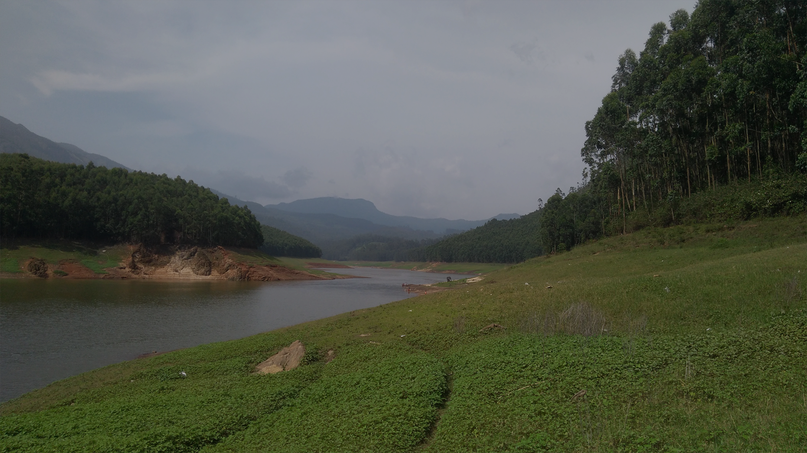
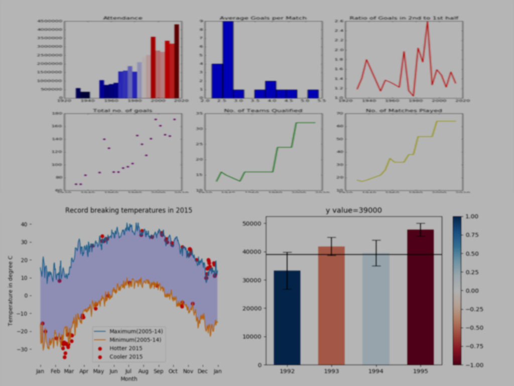
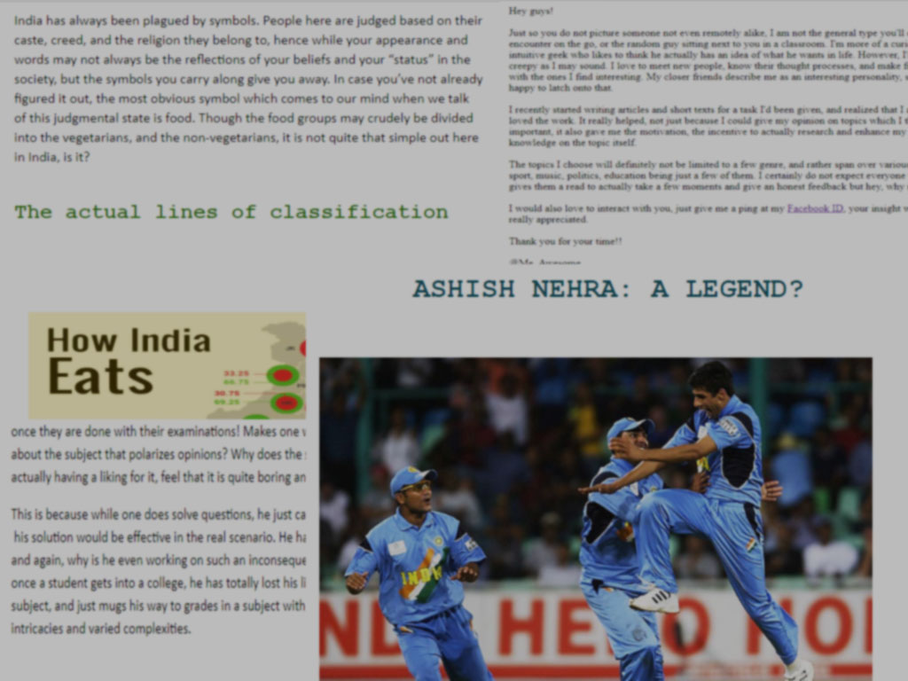
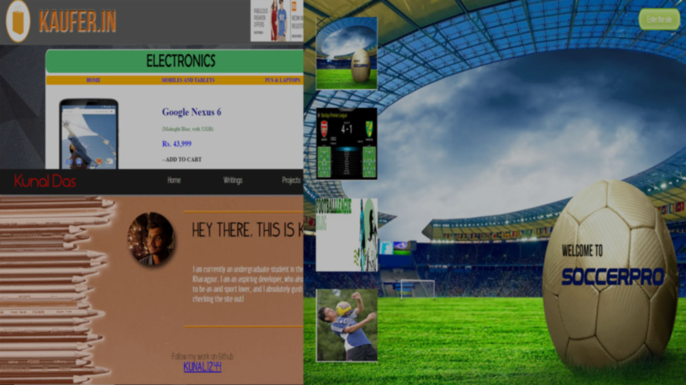

I am a university sophomore who loves to work upon things I find interesting. I happen to be inclined towards NLP and developing, and find peace in writing my mind out. Well, you'll find out more once you check the site out, so go on!

Kunal Das
Natural Language Processing and Raw Data Analyses
Applying Machine Learning models and Python libraries (Pandas, Numpy, Matplotlib, Scikit-Learn, NetworkX) to perform Sentiment Analysis, Topic Modelling, Language Translations and build Review Systems.

Kunal Das
Blogging and Writing
Blog on various topics and genre, ranging from Movie and Album Reviews to Sport articles (Cricket, Football, Lawn Tennis). Feel free to check out and give feedback!

Kunal Das
Web Development and Coding
Started out by scripting basic HTML sites as a young kid, to coding Python games, to developing full-fledged UIs.

Kunal Das
Design and Photoshop
Designing elements for web pages and creating indie designs (Engravings, Stylised Icons, Themes and Posters) on Illustrator and Photoshop.